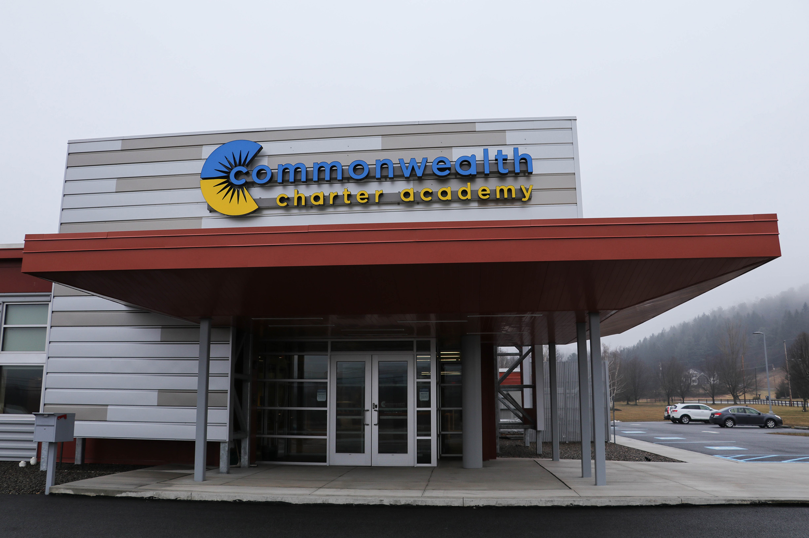

Seven of 14 charter schools in Pa. are operating with expired charters. Why is the Department of Education delaying the process?
By Stephanie Hacke
Oct. 4, 2017
Seven of 14 charter schools in Pa. are operating with expired charters. Why is the Department of Education delaying the process?
By Stephanie Hacke
(Photo courtesy of Pennsylvania Leadership Charter School)
Part of the series
The Charter Effect
Traditionally, the 20th anniversary is celebrated with china but we are marking the 20th anniversary of Pennsylvania’s charter school law with transparency and depth. While other local media outlets have reported on the sweeping change charter school choice has had on students and traditional school districts, our series will expand on that by teasing out the root of the tension between charters and other public schools: money and what appears to be differing standards of accountability.
This series will expose and explain the data and records behind the charter schools operating in Allegheny County.
Pennsylvania Leadership Charter School needs cash to finance the construction or renovation of a new building. But no bank has agreed to lend them money.
Every bank the school’s leaders met with wants to see the school’s charter renewed with the Pennsylvania Department of Education [PDE] before they take that step. But the school does not have it. It’s been five years since the former charter school coordinator at the PDE told the school that it should only take a few weeks for their charter renewal to be completed. But they are still waiting for it.
“Am I allowed to scream? Nah. I never scream, but sometimes I scream inside,” said James Hanak, founder and CEO of the statewide cyber charter school with an enrollment of 2,361 students in 2016-17. “Over the years, I have had maybe 40, certainly 30, banks come and visit us and we lay out all of our finances and all of the things we’re doing and they just love us, until I say to them, ‘But we’ve had this one sticky little problem and that is, the state has not yet issued the formal charter renewal.’”
That’s when they walk away.
Hanak said the delay in the school’s charter renewal has cost Pennsylvania Leadership hundreds of thousands of dollars in lease payments and he hasn’t gotten an answer as to when his school could receive a renewal from the PDE.
“Whenever we ask, they say, ‘Well, we’re working on it,’” he said.
Pennsylvania Leadership is not alone. Seven of the state’s 14 cyber charter schools operating in 2016-17 have been operating for one to five years on a charter that needs to be renewed.
To the charter school leaders affected, it puts them in somewhat of a vacuum, without clear direction or validity from the state.
The lag in renewals also means the PDE isn't delivering on the oversight that is expected of it, though the department and some of the schools will say they are still doing what needs to be done for the students.
Michelle Efthimiadou, 12th grade resource teacher with Pennsylvania Leadership Charter School, (left) discusses student curriculum with 9th grade counselor Erin Neason (center) and high school social studies teacher David Juliano. (Photo courtesy of Pennsylvania Leadership Charter School)
Outside of Pennsylvania, such delays in charter renewals are not a common occurrence, according to Nelson Smith, senior advisor for the National Association of Charter School Authorizers. While there is an effort in the state Legislature that addresses delays in renewals for brick-and-mortar charters, after talking to PublicSource the state representative sponsoring the bill said he planned to add language that would hold the PDE accountable for renewal delays for the cybers.
In Pennsylvania, nearly 33,000 students attend cyber charter schools — one of the highest totals in the country. Some of the state’s cyber charter schools operate on annual budgets of more than $100 million, funded through taxpayer dollars.
At renewal time, the authorizer is to conduct “a comprehensive review” prior to granting a five-year charter renewal.
The PDE’s assessment includes ensuring the schools meet “federal and state statutory and regulatory requirements to which they are subject to and their operational, financial and academic performance,” PDE acting communications director Casey Smith wrote in an email. The renewal process includes the review of several years of data on achievement results, graduation rates and federal accountability performance, among other measures.
The department has the option to revoke the charter of a cyber if the school violates its charter agreement or fails to meet requirements for student performance or fiscal management.
Commonwealth Charter Academy students participate in a STEM workshop. (Photo courtesy of Commonwealth Charter Academy)
When asked about the timeframe for renewal, Casey Smith pointed to the “vast amounts of information, data and documentation, and the commitment of several PDE staff with relevant subject matter knowledge” that it takes to review charter renewal applications.
She stated that Charter School Law does not require a charter renewal process to be completed within a certain timeframe. Charter schools continue to operate under their current charter until a renewal is granted.
Casey Smith said the PDE began an “increased focus” on charter school quality in 2015. The department, she said, began “implementing more robust charter authorization and oversight practices” that includes site visits, financial and programmatic reviews and providing technical assistance to schools. She did not answer a question as to why a charter renewal is lingering from 2012.
A disconnect?
Charters, initially issued for three to five years, are an essential contract between the schools and a supervisory body (either a local school district, or for cybers, the PDE); the charters detail how the school will operate, the curriculum and education strategies.
Leaders at several Pennsylvania cyber charter schools waiting on renewals said the turnaround has been much longer this time around than in the past and they’ve been given no explanation from the department.
“This is unusually long,” said Brian Hayden, CEO of Pennsylvania Cyber Charter School, one of the state’s oldest and largest cyber charters. “This is not typical, at least in our experience.”
Records on the PDE website show at least four cyber charter schools submitted their applications for charter renewal between 2009 and 2010 and received their formal renewal from the department within a year.
“Whenever we ask, they say, ‘Well, we’re working on it.’”
The lack of a renewal has not affected PA Cyber operationally, said Hayden, who noted he is open with staff about where the school stands in the renewal process. Still, the CEO said he was uncertain if the PDE had completed its site visit conducted nearly a year ago at the cyber charter school.
Typically, the department will reach out to the school with follow-up questions. That never happened. The charter school liaison left the department shortly after the visit and the school didn’t hear anything further.
A list provided by the PDE to PublicSource listed PA Cyber as “review completed. Under consideration for renewal,” with a review pending since 2015. Hayden asked a PublicSource reporter where PA Cyber stood on the list.
“I’m glad to see that they’ve determined that the site review has been completed,” Hayden said.
Support public-service journalism in Pittsburgh. Make a tax-deductible donation to PublicSource today.
Cyber charter school leaders noted changes in staffing at the PDE and said, while they get answers when they ask, two-way communication has suffered in recent years. A permanent director has yet to be appointed to oversee a Charter Division created by Gov. Tom Wolf in August 2016. Casey Smith said that appointment will take place “in the coming weeks.”
With a new director and oversight practices in place, she said the PDE “is hopeful that it has the resources it needs to begin addressing the pending cyber charter renewals.”
The charter renewal for Commonwealth Charter Academy [CCA] has been pending since 2016.
“The biggest thing that it does is it prevents long-range planning and there’s not the go-to people that we had in the department that we used to have, you know in past years to say, ‘Hey, I’ve got this problem,’” said CCA CEO Maurice Flurie. “It doesn’t really hurt us operationally. But what it does do is it takes the PDE out of the picture in terms of providing guidance and direction.”
Flurie, who has been in public education for 30 years, said he has noticed a change in the department in the last couple of years. It’s gone from a more advisory, or as he called it “parenting” role, to now just overseeing that schools are compliant — a role he said the department still takes seriously.

Commonwealth Charter Academy's Family Service Center near Lehighton, Pa. (Photo courtesy of Commonwealth Charter Academy)
As part of the charter renewal process, the PDE makes comments and suggestions for things the schools should fix. In the last round of renewals, Flurie said, department leaders focused on curriculum alignment. This time, it would be helpful to know what the focus is.
School leaders say they welcome feedback and the sooner they get it, the quicker they can implement changes.
“I wouldn’t mind having the Department of Education coming in and saying, ‘You’re doing this wrong, you’re doing this wrong, you’re doing this wrong,” said Hanak, who noted his school, Pennsylvania Leadership, had its best year yet in 2016-17. He said 40 percent of its students were on the honor roll.
One concern Flurie foresees is, if the delay in renewals continues, cyber charters could need to apply for a second renewal before receiving their last one.
That already has happened at Pennsylvania Leadership. Waiting five years for the renewal, their next application for renewal has come due. Hanak said lawyers for the school have advised him not to file another renewal application. The PDE in May performed a site review at Pennsylvania Leadership related to its charter renewal. Since, the PDE has asked for more documentation — copies of checks written to all employees since 2012 — from the school as part of its review, Hanak said.
An aerial photo of Pennsylvania Leadership Charter School’s main office in West Chester, Pa. (Photo courtesy of Pennsylvania Leadership Charter School)
Nelson Smith, of the National Association of Charter School Authorizers, said his organization encourages authorizers to make timely decisions as it not only affects the long-term planning of a charter school, but also families. If a school isn’t going to be renewed, families need to plan for the future.
“Make a decision. If a school is not meeting its obligations, don’t keep stringing it along. Come to a decision,” he said. “A wise man once said to me, not to decide is to decide. If an authorizer can’t make a decision in that period of time, it sounds to me if they’re trying to send a message that they should go ahead and send it.”
In many states if an authorizer is struggling to decide whether a school is meeting its criteria, the authorizer has the option to renew a charter for one year and set specifications for what they want to see fixed in that time before they grant a longer renewal. Charter school law in Pennsylvania does not provide the PDE with that option. Charters must be renewed for five years.
Nelson Smith pointed to three reasons that authorizers, at times, struggle to make a timely decision: Some authorizers do not have the capacity, or staffing, in place to handle the reviews; others do not have all of the data from the schools they need to make a decision; and then there are those who struggle with what metrics should be used to judge a school.
The future
House Bill 97, which sits in the House Rules Committee, would amend the Charter School Law to require public school boards to vote on a charter school’s renewal application within 90 days of its receipt. The bill in its current form, however, only addresses brick-and-mortar charters schools on this topic and doesn’t require the same turnaround for the PDE when it comes to cyber charter renewals.
After being contacted by PublicSource, State Rep. Mike Reese, who sponsored the bill, said he planned to add language to the bill that would hold the PDE to the same standards as is proposed for traditional districts.
“I think there probably should be some language that deals with that in there,” he said.
The bill also would allow authorizers to grant a 10-year renewal for charters that meet certain performance standards created by the State Board of Education. Authorizers still would have the option to revoke a charter during the 10 years, Reese said.
“Make a decision. If a school is not meeting its obligations, don’t keep stringing it along. Come to a decision.”
At Agora Cyber Charter School, which has been awaiting a renewal of its charter since 2015, CEO Michael Conti said the delay has “truly no effect” on the school.
Conti said his school has been in “regular communication” with the PDE and making continuous improvements where needed.
“To just sit and wait for your renewal before you make any course corrections or any improvements, I think you’re doing a disservice to the taxpayers and to your students,” he said.
Conti said he doesn’t fault the PDE for the extra time it has taken for charter renewals. The department has always been “extremely understanding” of the school’s needs, he said.
“I give deference to the department. I know how understaffed and overworked those people are and I greatly respect the work that they do. I know these things take time,” he said.
Other cyber leaders share the feeling that it will all work out — in time.
“We’re very confident in our operation and the good things we’re doing for kids,” Flurie said. “The fact is, we can still operate, we can still serve families, we can still do what needs done. I still think it would be nice to have the document in hand.”